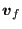
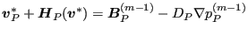
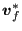
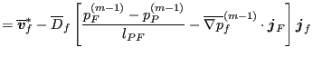
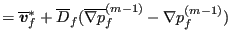
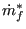
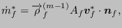
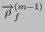

This user subroutine allows the user to insert his/her own nonlinear equations (also called Multiple Point Constraints or MPC's). The driver routine is ``nonlinmpc.f''. For each new type of equation the user can define a name, e.g. FUN (maximum length 80 characters). To be consistent, the user subroutine should be called umpc_fun and stored in ``umpc_fun.f''. In file ``nonlinmpc.f'' the lines
elseif(labmpc(ii)(1:4).eq.'USER') then
call umpc_user(aux,aux(3*maxlenmpc+1),const,
& aux(6*maxlenmpc+1),iaux,n,fmpc(ii),iit,idiscon)
should be duplicated and user (USER) replaced by fun (FUN).
It is assumed that the nonlinear equation is a function of the displacements only. Then it can generally be written as
|  | (498) |
where  represents the displacement in node  in direction . Nonlinear equations are solved by approximating them linearly and using an iterative procedure. It is the linearization which must be provided by the user in the subroutine. Assume we arrived at an intermediate solution . Then the above equation can be linearly approximated by:
|  | (499) |
For more details the user is referred to [18]. To use a user-defined equation its name must be specified on the line beneath the keyword *MPC, followed by a list of all the nodes involved in the MPC. This list of nodes is transferred to the user routine, as specified by the following header and input/output variables of the umpc_user routine:
subroutine umpc_user(x,u,f,a,jdof,n,force,iit,idiscon)
!
! updates the coefficients in a user mpc
!
! INPUT:
!
! x(3,n) Carthesian coordinates of the nodes in the
! user mpc.
! u(3,n) Actual displacements of the nodes in the
! user mpc.
! jdof Actual degrees of freedom of the mpc terms
! n number of terms in the user mpc
! force Actual value of the mpc force
! iit iteration number
!
! OUTPUT:
!
! f Actual value of the mpc. If the mpc is
! exactly satisfied, this value is zero
! a(n) coefficients of the linearized mpc
! jdof Corrected degrees of freedom of the mpc terms
! idiscon 0: no discontinuity
! 1: discontinuity
! If a discontinuity arises the previous
! results are not extrapolated at the start of
! a new increment
!
The subroutine returns the value of f ( ), the coefficients of the linearization ( ) and the degrees of freedom involved.
The parameter idiscon can be used to specify whether a discontinuity took place. This usually means that the degrees of freedom in the MPC changed from the previous call. An example of this is a gap MPC. If a discontinuity occurred in an increment, the results (displacements..) in this increment are NOT extrapolated to serve as an initial guess in the next increment.
An example is given next.